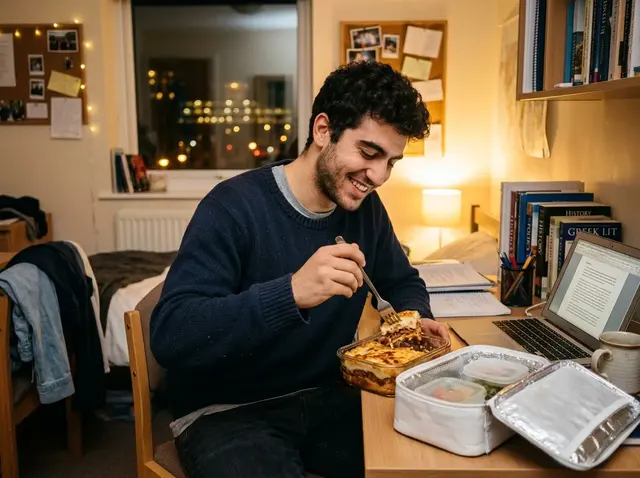
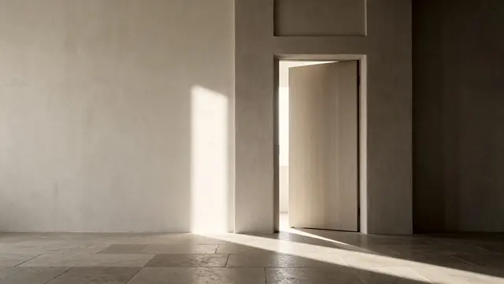
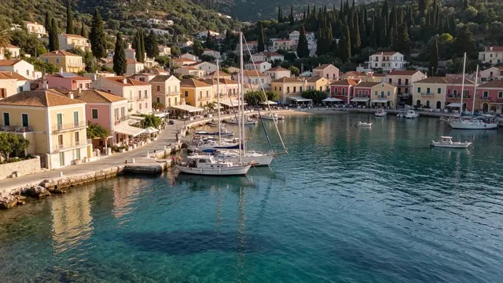

Ιστορίες της εβδομάδας
Όλες
Τα εργαστήρια που κρατούν ζωντανή την παράδοση
Τεχνίτες μιλούν για τη δουλειά των χεριών σε μια εποχή μηχανών.

Μετέωρα: ο χειμώνας φέρνει νέο κύμα επισκεπτών
Οι τοπικοί επαγγελματίες ζητούν καλύτερη οργάνωση στα σημεία θέασης.

Πειραιάς: χειμερινή σεζόν κρουαζιέρας με περισσότερες αφίξεις από ποτέ
Τι σημαίνει η κίνηση για την αγορά της πόλης και τα μαγαζιά γύρω από το λιμάνι.

Φοιτητικές εστίες: ουρές για ένα δωμάτιο και ενοίκια που «τρέχουν»
Φοιτητές και γονείς περιγράφουν πώς βγαίνει ο μήνας στις μεγάλες πόλεις.

Το παστίτσιο της Κυριακής: η συνταγή που περνά από γενιά σε γενιά
Τα μυστικά για την μπεσαμέλ που δεν «κάθεται».

Η πρώτη είδηση δεν είναι πάντα η σωστή. Η σωστή είναι αυτή που αντέχει τον έλεγχο.Αμαλία Κουμπούρα · Άποψη«Η ενημέρωση δεν είναι αγώνας ταχύτητας» →
Πολιτισμός & ταξίδι
Όλα Πολιτισμός
ΠολιτισμόςΟι παραστάσεις του χειμώνα που αξίζει να κλείσετε από τώρα
 Πολιτισμός
ΠολιτισμόςΔελφοί: εκδηλώσεις στο αρχαίο θέατρο τον Δεκέμβριο
 Περιφέρεια
ΠεριφέρειαΡέθυμνο: το παλιό λιμάνι αλλάζει όψη με νέα πεζοδρόμηση

ΤουρισμόςΚεφαλονιά: ο χειμερινός τουρισμός κερδίζει έδαφος
 Τουρισμός
ΤουρισμόςΝαυάγιο: νέοι κανόνες για τις επισκέψεις από θάλασσα
 Αθήνα
ΑθήναΒραδιά στην Ακρόπολη: ειδικό ωράριο για το κοινό
Με την υποστήριξη · Χορηγούμενο
Θέση για χορηγούμενο άρθρο που μοιάζει με το υπόλοιπο περιοδικό
Οι χορηγούμενες ιστορίες φέρνουν συνήθως περισσότερα έσοδα από ένα απλό banner — και ενοχλούν λιγότερο τον αναγνώστη.
Διαφήμιση 300 × 250
ή απευθείας διαφημιστής
ή απευθείας διαφημιστής
Καθημερινά
Όλα
Οικονομία
Νέο πλαίσιο για τα ενοίκια: τι αλλάζει από τον Ιανουάριο για ιδιοκτήτες και ενοικιαστές

Τεχνολογία
Ψηφιακές υπηρεσίες: πώς οι μεγαλύτεροι μαθαίνουν να τις χρησιμοποιούν

Lifestyle
Κατοικίδια και κρύο: τι χρειάζεται η γάτα σας τον χειμώνα

Εργασία
Τηλεργασία ή γραφείο; Τι προτιμούν τελικά οι εργαζόμενοι

Οικονομία
Κατασκευές: πού χτίζονται τα περισσότερα νέα διαμερίσματα
Ταξίδια
Αεροδρόμιο: οι ώρες αιχμής των γιορτών και πώς θα τις αποφύγετε
Διαφήμιση970 × 250θέση για Google AdSense ή απευθείας διαφημιστή